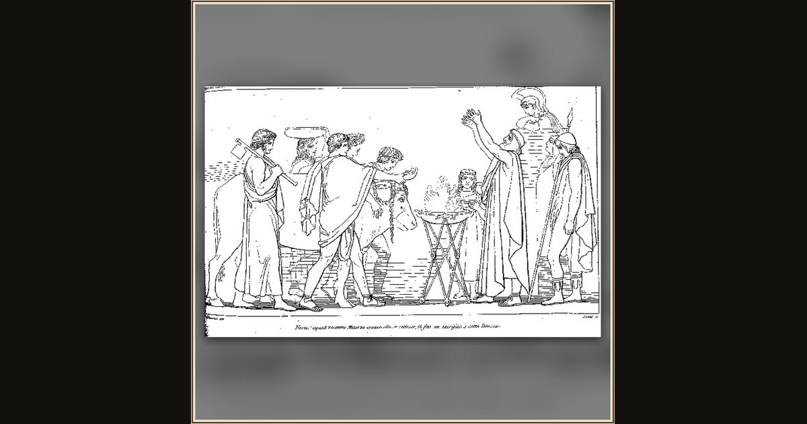

Nestor's Sacrifice to Minerva (from The Odyssey of Homer)
John Flaxman, engr. Tommaso Piroli · 1793/1805 · The Metropolitan Museum of Art · New York, USA
On the sandy shore at Pylos, old King Nestor leads a grand seaside sacrifice to Athena while welcoming Telemachus with tales of Troy. Explore its place in Book III of the Odyssey.